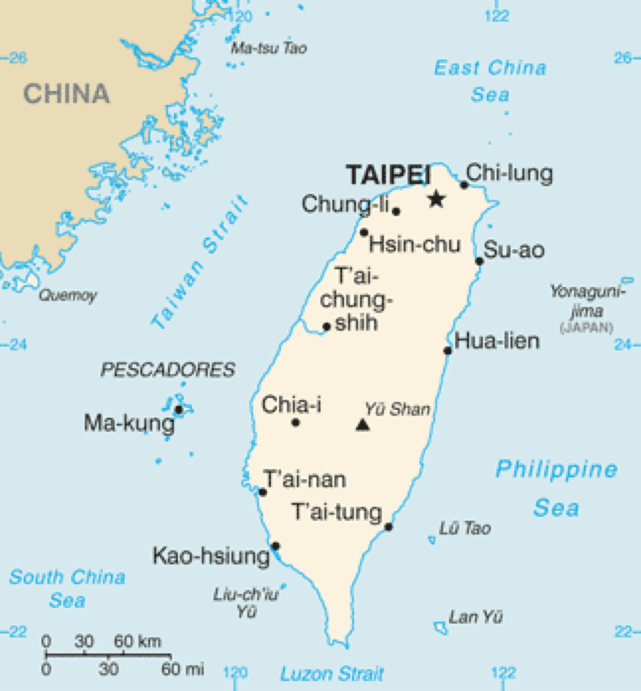

為什麼要用「分區」而不是一次找全臺灣？
露營車行程同時受駕駛時間、海拔、氣溫與補給點密度影響。以分區方式思考，等同先把「移動成本」框住，再進入營區比較，較不容易出現「第一天就開到透支」的情況。交通部觀光署的臺灣觀光資訊網亦習慣以區域與主題呈現活動，可與本文分區表互相對照。
官方地圖與民間地圖的差異
政府單位（例如各縣市觀光處、國家風景區管理處）提供的地圖與導覽，強調合法遊憩、步道與安全警示；民間地圖或社群截圖可能更新快，但未必反映最新管制。露營車因車體較大，建議以官方資訊確認道路與停車限制後再出發。
彰化與中臺灣的連結
規劃海線或山線時，常會穿過彰化周邊的平原路段作為轉運。彰化縣政府觀光旅遊資訊網提供在地活動與景點介紹，可用來安排「中繼休息＋補給」，但露營車夜宿仍須選擇合法營地或經許可之場域。
如何把地圖思維接到揪好森服務區
揪好森以臺北、桃園、新竹為主要服務範圍，適合搭配北臺灣與海線分區做放射状規劃。當你要往更南或東部延伸時，請把還車位置、里程與駕駛疲勞一併列入，而非只看景點數量。
參考與延伸閱讀
- 交通部觀光署｜Taiwan.net.tw（國內旅遊總入口、活動與安全宣導）
- 北海岸及觀音山國家風景區管理處
- 桃園市政府觀光旅遊局
- 新竹縣旅遊網
- 苗栗縣政府文化觀光局
- 台灣山林悠遊網｜農業部林業及自然保育署
- 交通部高速公路局
- 交通部公路總局（用路安全與道路養護資訊）
- YouTube 搜尋｜高速公路局相關宣導影片（請交叉比對官方來源）
- Wikimedia Commons（本文章首圖為可授權再利用之開放內容，僅作主題示意）
- 彰化旅遊資訊網
- 維基百科｜臺灣（地理概況參考）
| 分區 | 地形與路線特徵 | 露營車注意 | 官方／導覽入口 | 建議搭配 |
|---|---|---|---|---|
| 北北基桃 | 都會進出、快速道路密集 | 注意限高與路邊停車 | 臺北／桃園觀光、公路局 | 北海岸風景區 |
| 竹苗山線 | 丘陵、林相變化 | 彎道與天候起霧 | 新竹縣旅遊網、苗栗觀光 | 山林悠遊網 |
| 中彰投 | 平原＋部分山區 | 長距離移動可分段 | 彰化旅遊網等 | 國道服務區補給 |
| 雲嘉南高屏 | 海線長、氣溫高 | 鹽霧與日照 | 觀光署南部資訊 | 海邊路線文章 |
| 東部與離島 | 路幅與旅次較長 | 加油與補給點較稀疏 | 觀光署東部專區 | 租期與里程確認 |
#露營區地圖 #分區旅遊 #台灣露營 #桃園露營 #新竹露營 #苗栗露營 #觀光署 #露營車路線 #揪好森 #營位